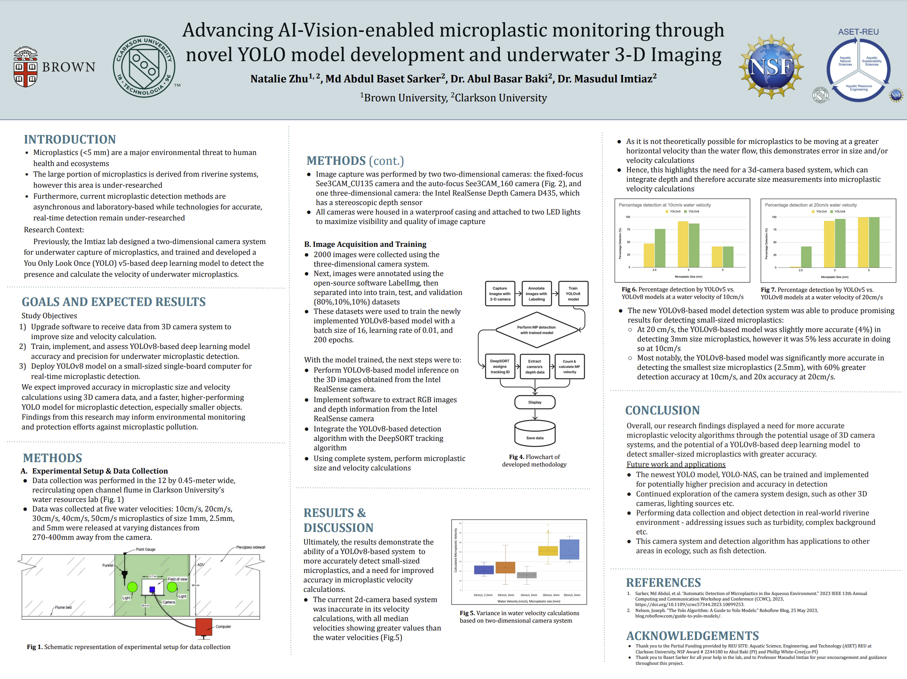

Developing and automating underwater micro plastic detection through deep learning technology.

Project Description:
Duration: May 2023 - Jul 2023
Team: Natalie Zhu, Md Abdul Baset Sarker, Dr. Masudul Haider Imtiaz
Microplastics are a pressing threat to marine and freshwater environments. Given the current lack of technologies for rapidly identifying and quantifying microplastics in underwater environments, I worked with the Clarkson University AI Vision Lab (AVHBAC) to develop a real-time camera-based system capable of detecting and tracking underwater microplastics.
As one of ten undergraduate students selected for the Clarkson University NSF-funded research program, I took on a leading role on this project, guiding its progression and direction over the internship period of three months.
Project Goals & Achievements:
As the lead researcher on this project, I decided on the new direction of the project through my observations that 1. The current detection system failed to capture the distance from camera to microplastiic and 2. Smaller-sized microplastics were being detected at much lower rates. Therefore, my goals, which I ultimately achieved, were the following:
> Trained and implemented novel deep learning model for microplastic detection, achieving 5x more accurate detections of small-sized microplastics.
> Integrated software with three-dimensional camera system to derive depth data from images, resulting in a 37% improvement in microplastic size and velocity calculations.
> Integrated new microplastic detection system with advanced object tracking algorithm DeepSORT to enable real-time multi-object microplastic tracking.
Technologies Used:
> YOLO (You Only Look Once) detection models
> Deep SORT object tracking algorithm
> ML Libraries: PyTorch, SuperGradients
> Intel RealSense Library
> Programming Language: Python
Further Project Details
> Final Project Poster & Code
Below, find my final research poster detailing my methodologies and results from this project.
Github Link: https://github.com/natzhu03/microplastic-detection